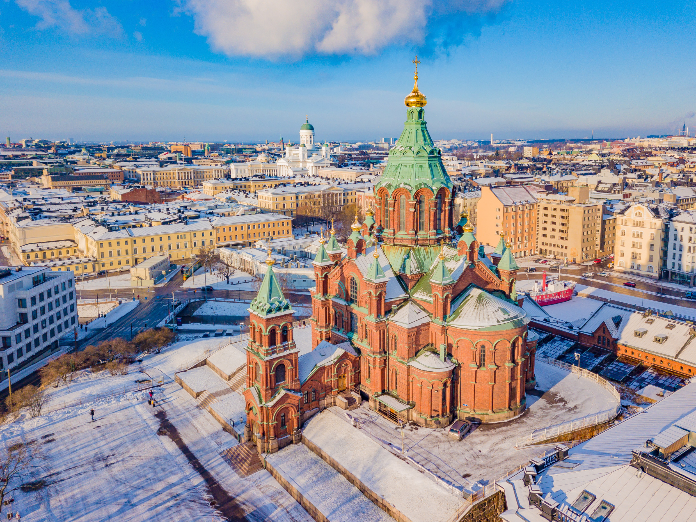
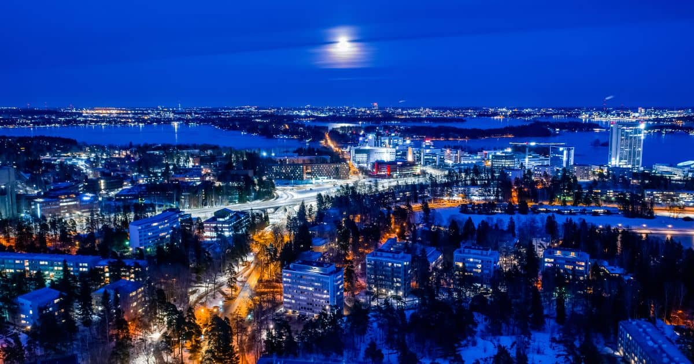
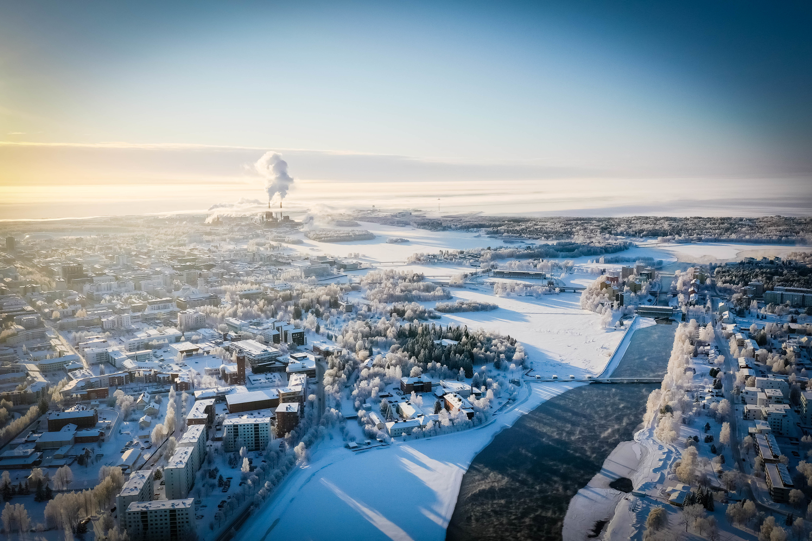
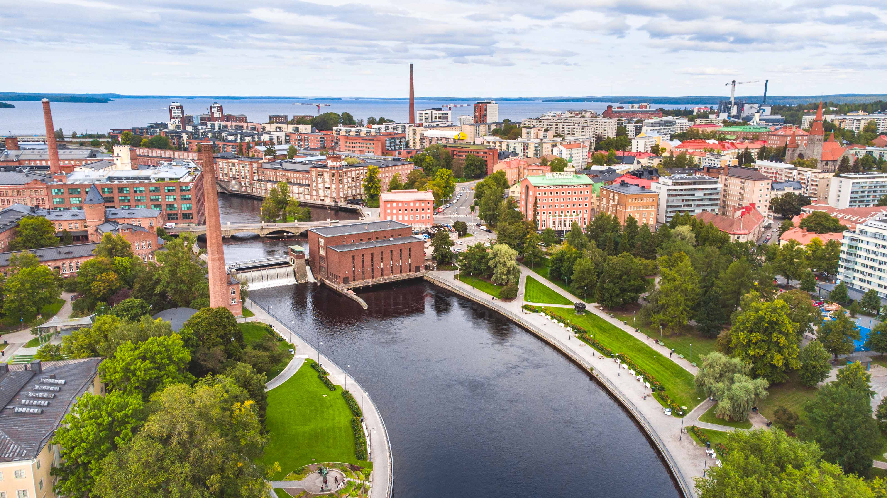

Nejznámější města Finska
Helsinki

Helsinky jsou hlavní a největší finské město a přístav. Byly založeny roku 1550. Jejich centrum leží
na malém poloostrově ve středu Finského zálivu, ale patří k nim ještě poměrně velké území směrem na
východ. Rozkládají se na 715,55 km² a mají asi 650 100 obyvatel.
Espoo

Espoo (švédsky Esbo) je město na jižním pobřeží Finska, u Finského zálivu. Spolu s městy Helsinki a
Vantaa, se kterými sousedí, a městečkem Kauniainen, které obklopuje, tvoří helsinské souměstí Velké
Helsinky. Espoo náleží do provincie Uusimaa.
Vanta

Oulu je největší město v severním Finsku. Leží na severovýchodním pobřeží Botnického zálivu Baltského
moře při ústí řeky Oulu v provincii Severní Pohjanmaa. Se svými více než 200 000 obyvatel se po
Turku a před Jyväskylä řadí mezi největší finská města.
Tampere

Tampere je třetím největším městem Finska a největším vnitrozemským městem v
severní Evropě. Bylo založeno roku 1779. Tampere leží v západním Finsku a jeho centrum je mezi
jezery Näsi a Pyhä. Patří k němu ale i poměrně rozsáhlá oblast v okolí těchto jezer. Rozkládá se na
523,42 km² a má přibližně 240 tisíc obyvatel.